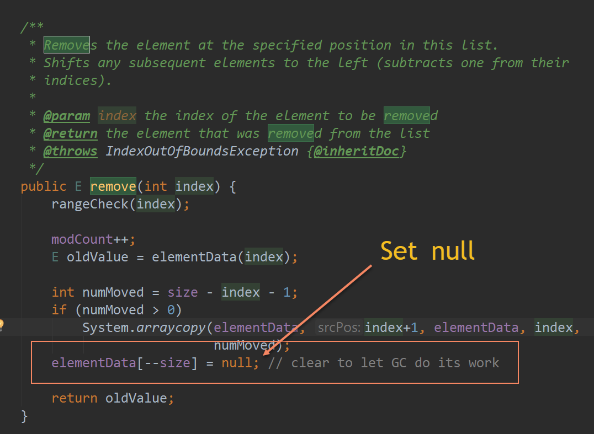

GC 算法之 CMS 与 G1
GC
- 原生内存
- 堆
概要
代
- 新生代
- 老生代
- 持久带
类型
- Serial
- Throughput
- CMS
- G1
区别
调优
-
代码
- 尽可能少写代码
- 使用最合适的类型
- 减少无谓的对象新建
- 延迟加载
- 尽早清理(Null)
- ArrayList(Removed)
-
配置
错误
-
Java Heap Space
java.lang.OutOfMemoryError: Java heap space -
Metaspace(PerGen Space)
-
GC overhead limit exceeded
- 
收尾
Reference:
[1]:Java Performance: The Definitive Guide